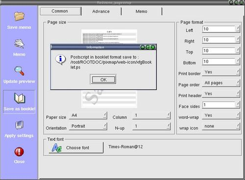

To format text file for booklet style binding

Step 1 : Open your text file onto the editor.
note : Currently the version only support booklet format from the already
opened text file on the editor.
Step 2 : Go to menu " Page tools " --->> " Save as booklet " will bring up the page
setup dialog.
Step 3 : Format the page as you like.You can do a preview with the new settings.
note : The preview is done by using a sample page.
Step 4 : Click "Apply settings" to save the settings.
Step 5 : Click on "Save as booklet" to save into booklet format.
Step 6 : A small dialog will show you the saved location and filename.
Step 7 : Click "Close" and the saved file will be highlighted in the xfgcommander.
note : The new postscript file is always save with the filename
"xfgBooklet.ps" into the current directory of the xfgcommander.Before you open
the booklet setup dialog,if there is already a file by the same name as
"xfgBooklet.ps",it will be backup under the new name of "ThisDate+ThisTime+AP/PM.ps"
in the cirrent directory.
note : The current directory of the xfgcommander is the current
directory of the saving location for all files saved.They will be highlighted
after you close a dialog or executed a menu command.